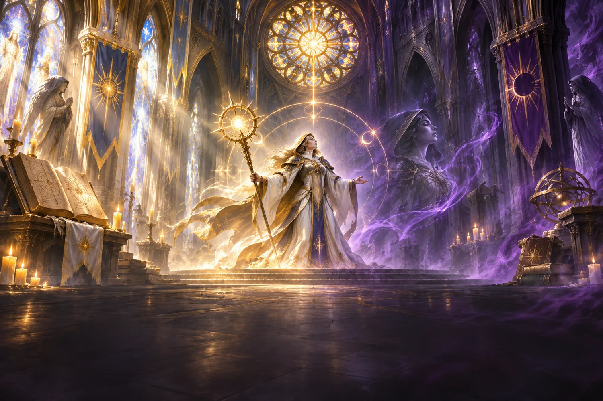

-

Druid
Volume I
The Verdant Testament
On the Balance of Living Things
Balance · Feral Combat · Restoration
-

Hunter
Volume II
The Far Horizon Chronicle
From Field, Forest and Sky
Beast Mastery · Marksmanship · Survival
-

Mage
Volume III
The Astral Codex
On the Art of Spellcraft
Arcane · Fire · Frost
-

Paladin
Volume IV
The Golden Oath
In Service of the Light
Holy · Protection · Retribution
-

Priest
Volume V
The Litany of Dawn
Prayers at the Edge of Shadow
Discipline · Holy · Shadow
-

Rogue
Volume VI
The Shadowblade Manual
Notes from the Unseen War
Assassination · Combat · Subtlety
-

Shaman
Volume VII
The Covenant of Storm and Stone
Testimonies of the Elements
Elemental · Enhancement · Restoration
-

Warlock
Volume VIII
The Grimoire of Bound Souls
On Pact and Sacrifice
Affliction · Demonology · Destruction
-

Warrior
Volume IX
The Iron Vanguard
A Soldier’s Testament
Arms · Fury · Protection